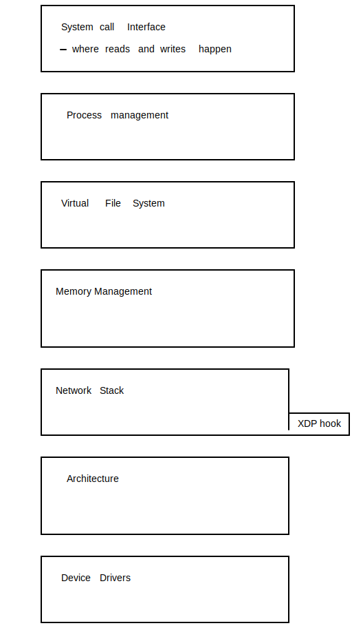

In the NIC of time
Enabling high-performance edge applications with OpenStack, OVS, and SmartNICs
88% increase in mobile data traffic Q4-2017 to Q4-2018
EPC to the rescue

Is it a bird? is it a plane?
It's SmartNIC !
What is this smartNIC, anyway?
Is it an embedded linux? Is it a linux mini server?
When should you use a smartNIC?
Do you use more than 4CPUs for OVS per compute host?
Ironic Neutron Cyborg
root@cic-1:~# openstack port create
usage: openstack port create [-h] [-f {json,shell,table,value,yaml}]
[-c COLUMN] [--max-width [--print-empty] [--noindent] [--prefix PREFIX] --network [--device [--mac-address [--device-owner [--vnic-type [--dns-name dns-name] [--fixed-ip subnet= [--binding-profile [--enable | --disable] [--project [--project-domain [--security-group [--qos-policy [--enable-port-security | --disable-port-security] [--allowed-address ip-address= [--tag --vnic-type VNIC type for this port (direct | direct-physical | macvtap | normal | baremetal, default: normal)
root@FPA1066GX-DA2:~# ovs-appctl dpif/dump-flows br0
in_port(14),eth(src=68:05:ca:91:36:b5,dst=68:05:ca:91:36:b5),eth_type(0x0800),ipv4(src=192.168.0.1,dst=192.168.1.1,proto=6),
tcp(src=1234,dst=5678), packets:0, bytes:0, used:7.340s, actions:drop
Performance
Kernel Space vs User Space
Kernel bypass with DPDK
$ echo 0000:18:00.4 > /sys/bus/pci/devices/0000\:18\:00.4/driver/unbind
$ echo 0000:18:00.3 > /sys/bus/pci/devices/0000\:18\:00.3/driver/unbind
$ echo 0000:18:00.4 > modprobe vfio
$ echo 0000:18:00.3 > modprobe vfio_pci
$ mkdir -p /dev/hugepages/
$ mount -t hugetlbfs hugetlbfs /dev/hugepages/
$ echo 2048 > /sys/devices/system/node/node0/hugepages/hugepages-2048kB/nr_hugepages
$ modprobe uio
$ insmod x86_64-native-linuxapp-gcc/kmod/igb_uio.ko
$ dpdk-devbind.py -b igb_uio 18:00.2 18:00.3
XDP and eBPF
$ grep CONFIG_BPF_SYSCALL /boot/config-4.15.0-46-generic
CONFIG_BPF_SYSCALL=y
prompt: XDP sockets
type: bool
depends on: CONFIG_BPF_SYSCALL
defined in net/xdp/Kconfig
found in Linux kernels: 4.18–4.20, 5.0–5.1, 5.2-rc+HEAD

XDP_DROP
XDP_PASS
XDP_TX
XDP_ABORTED
XDP_REDIRECT
eBPF is a superpower
SlideX
SlideX

Datacenters today?
Stacked up "desktop" computers filled with ... air?